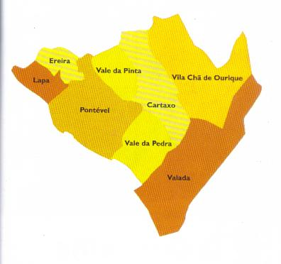

Info
O município do Cartaxo era inicialmente composto por cinco freguesias: Cartaxo, Vale da Pinta, Valada, Pontével e Ereira-Lapa.[9] No século XX, foram criadas mais três freguesias: Lapa, por desanexação de Ereira (1921), Vila Chã de Ourique (1927) e Vale da Pedra, por desanexação de Pontével (1987).
